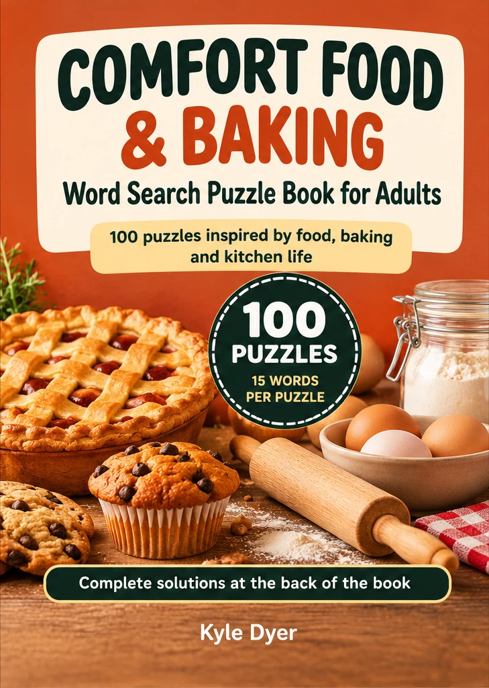
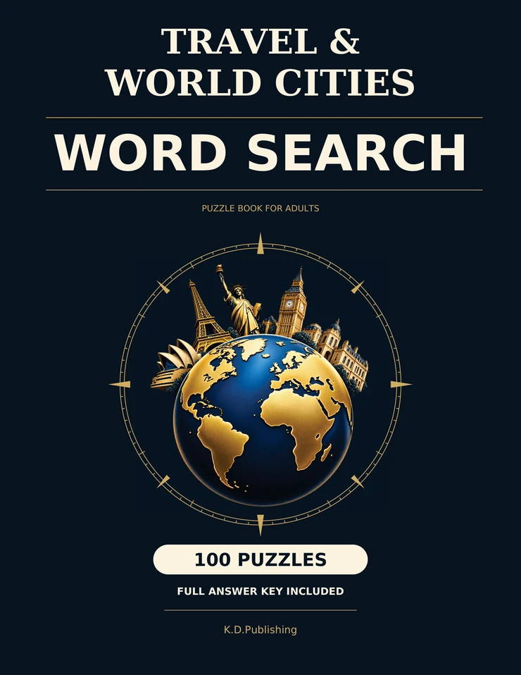

Free Printable British Nostalgia Word Search for Adults
A milk float on the street, a record player at home and a thermos for the seaside: enjoy 12 familiar words in a free large-print A4 puzzle, with a separate answer sheet.
Find a puzzle for a quiet moment, a favourite subject or a thoughtful gift.

100 large-print British nostalgia word searches for adults and seniors, with familiar memories of childhood, school days and seaside holidays.
See inside
Word searches inspired by planets, galaxies and astronomy, with an answer key.
See inside
Outdoor-themed word searches covering animals, forests, birds and national parks.
See inside
Ocean, beach and sea-life themed word searches with an answer key.
See inside
Film and music themed word searches, from movie nights to the golden age of Hollywood.
See inside
Large-print word searches exploring World War II history and themes.
See inside
Large-print word searches on calm and mindfulness themes, with an answer key.
See inside
Spooky large-print word searches for Halloween, with an answer key.
See inside
Festive word searches for cosy Christmas puzzle time, with an answer key.
See inside
A collection of classic motorcycle themed word searches.
See inside
100 food and baking word searches for adults, inspired by cooking and kitchen classics, with a full answer key.
See inside
Flowers, herbs and cottage gardening themes in word search form.
See inside
100 travel-themed word searches for adults, inspired by cities, landmarks and geography, with a full answer key.
See inside
Gratitude and positivity themed word searches with an answer key.
See inside
100 large-print word searches exploring American everyday life from the 1950s to the 1980s, with 25 puzzles per decade.
See inside
60 extra-large-print British word searches in four gentle levels, with familiar UK themes, optional conversation prompts and answers.
See inside